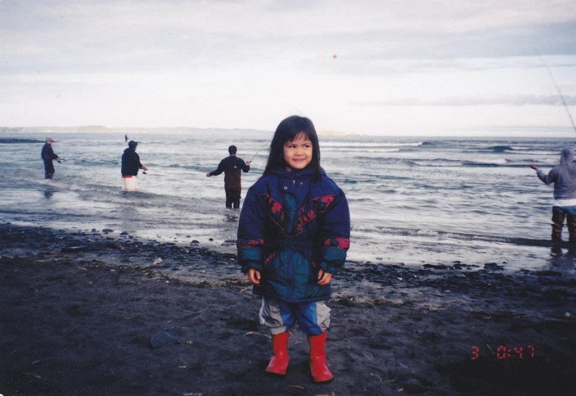

20 years old
Filipino-American
aspiring web developer
Krisha is pronounced krih-shuh. I'm delighted to virtually introduce myself ☼.
I was born in San Diego, California where I spent the first six months of my life. I spent the next five and a half years in Kodiak, Alaska. I don't remember much of it, but I do remember doing plenty of fishing in rivers and at beaches. Here is a picture of me!

I relocated to Orlando, Florida in 2001 and have been here ever since. I would love to relocate again sometime in the future and hope that my opportunities will take me somewhere new. I earned my Associate's Degree at Valencia College, I played the tuba for six years, I love ultimate frisbee and going to the beach.. and also playing ultimate frisbee at the beach. I have a dog named Bolin, after the brotherly Earthbender from the Legend of Korra (one of my favorite TV shows).
Connect with Me